Released on June 11, 2008
(Next Release on June 18, 2008)
Monte Carlo and Forecasting Hurricanes
The gaming rooms at Monaco’s famous Monte Carlo Casino resonate with people trying their luck at the baccarat, poker, and craps tables. No one knows who will break the bank or who will go home broke. Although wise gamblers carefully consider the odds, or estimates of expected results, when placing their bets, they also understand there’s no such thing as a “sure thing” in a casino.
Similarly, despite their access to sophisticated modeling technology, hurricane forecasters at the National Oceanic and Atmospheric Administration (NOAA) realize their expectations about the severity of tropical weather during the upcoming hurricane season are anything but a sure thing. NOAA readily acknowledges in its most recent 2008 Atlantic Hurricane Season Outlook that their projections involve an enormous amount of uncertainty. The forecasters emphasize that the Outlook is not deterministic, but probabilistic, and they present their projections in terms of “likely” ranges of activity. For the 2008 season (June 1 to November 30), NOAA expects 6 to 9 hurricanes will pass through the Atlantic basin, of which 2 to 5 may be intense hurricanes. The tracks of past hurricanes suggest that some of these storms may pass through the Gulf of Mexico (see Figure 1).
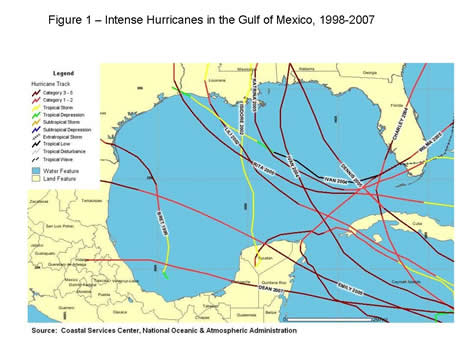
EIA uses NOAA’s hurricane projections in forming its estimates of the expected impact of tropical storms and hurricanes on offshore Gulf crude oil production during the 2008 hurricane season, which are discussed in a supplement to the June Short-Term Energy Outlook. During eight of the last ten summers tropical storms or hurricanes strong enough to temporarily shut in production have passed through the Gulf producing region (see Figure 2). However, the effects have ranged from tiny blips in production caused by Tropical Storm Allison (2001) to the devastation caused by Hurricanes Katrina and Rita (2005).
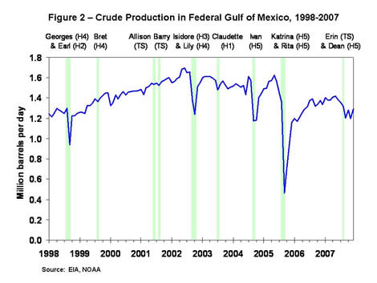
To address the uncertainty in both the potential for hurricane activity and the impact on offshore producers, we here at EIA use a statistical method for analyzing random events called, appropriately enough, Monte Carlo simulation. This methodology combines information from NOAA’s hurricane projections with the shut-in production from past storms, and randomly simulates the number of tropical storms and hurricanes passing through the Gulf along with the outage caused by each event. This simulation creates a probability distribution illustrating the likelihood of various levels of production impacts.
The median level of shut-in crude oil production (meaning a 50 percent chance of falling below the value and a 50 percent chance of exceeding it) is 11 million barrels for the entire season. However, as one would expect, the range of potential impacts is extreme, ranging from no outages to catastrophic destruction depending on the number of storms and the specific track of each one. The simulation projects a 65 percent chance that cumulative shut-in crude oil production for 2008 will fall somewhere between 2 and 41 million barrels.
Notwithstanding the uncertainty surrounding our projections, the Monte Carlo simulation does point to some important conclusions regarding the potential for shut-in production. First, even though NOAA expects this hurricane season to be more active than normal, the likelihood of experiencing another season like 2005 when Hurricanes Katrina and Rita passed through the offshore Gulf producing region is relatively remote—the probability of more than 100 million barrels of shut-in crude oil production during 2008 is less than 1 percent. On the other hand, the likelihood that offshore crude oil producers will escape completely unscathed this season is also relatively small—only 2 percent.
Any projections of crude oil production outages caused by hurricanes should be taken with a grain of salt. Uncertainty surrounds not only this summer’s tropical weather predictions but also the impact of any given storm on Gulf producers. Translating these outage expectations to impacts on oil markets adds a whole other dimension of uncertainty. In contrast to the games at the Monte Carlo casino, whose outcomes matter only to the player and the house, interest in how the upcoming hurricane season in the Gulf of Mexico will affect oil markets is something that matters to all of us.
U.S. Average Gasoline Price Above $4 for the First Time
For the eleventh consecutive week, the U.S. average retail price for regular gasoline increased to another record high, this time exceeding $4 a gallon for the first time. The price rose 6.3 cents to $403.9 cents per gallon, 96.3 cents higher than last year at this time. The average for the East Coast went up by 4.9 cents to 401.9 cents per gallon; prices in New England and the Central Atlantic increased even more, hitting 408.9 and 405.8 cents per gallon, respectively. The average price in the Midwest increased by 3.0 cents to 398.2 cents per gallon. The Gulf Coast remained the lowest price of any region but increased by 6.3 cents to 390.9 cents per gallon. The price in the Rocky Mountain region gained 5.1 cents to 394.1 cents per gallon. The West Coast price soared 15.9 cents to 432.5 cents per gallon. Once again, the average price in California went up even more, surging 19.1 cents from the previous week to hit 443.3 cents per gallon.
The national average price of diesel fuel dropped for the second week in a row, and once again the decline was small, just 1.5 cents. The average price slipped to 469.2 cents per gallon, 190 cents above a year ago. Prices dropped in most regions of the country. The average price on the East Coast fell 1.6 cents to 474.3 cents per gallon. The lowest regional price occurred in the Midwest, where the price slipped 2.8 cents to 461.5 cents per gallon. The average price in the Gulf Coast was 465.8 cents per gallon, a drop of just six-tenths of a cent. For the second week in a row, contrary to the rest of the country, the price in the Rocky Mountains went up, increasing by 1.8 cents to 469.8 cents per gallon. On the West Coast, the average price dipped by 0.4 cent to 487.4 cents per gallon. In California, the average price dropped 3.5 cents to slip below $5 for the first time since May 19. Nonetheless, at 499.2 cents per gallon, the price was still 199.5 cents above a year ago.
Propane Build Slows
The robust build in primary supplies of propane seen over recent weeks slowed last week with inventories showing a build totaling about 0.5 million barrels, pushing stocks higher to an estimated 38.5 million barrels as of June 6, 2008. Most of the weekly build was concentrated in the Midwest where inventories gained 0.3 million barrels, while the Gulf Coast reported the second largest weekly gain that measured 0.2 million barrels. East Coast inventories reported a small 0.1 million-barrel loss last week, while the combined Rocky Mountain/West Coast region reported a gain of 0.1 million barrels during this same time. Propylene non-fuel use inventories edged higher last week and accounted for a slightly larger 4.7 percent of total propane/propylene from the prior week’s 4.5 percent share.
Text from the previous editions of “This Week In Petroleum” is now accessible through a link at the top right-hand corner of this page.
| Retail Prices (Cents Per Gallon) | |||||||
| 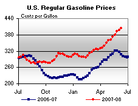 | 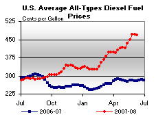 | ||||||
| Retail Data | Changes From | Retail Data | Changes From | ||||
| 06/09/08 | Week | Year | 06/09/08 | Week | Year | ||
| Gasoline | 403.9 | Diesel Fuel | 469.2 | ||||
| Spot Prices (Cents Per Gallon) | |||||||||||||||||||||||||||||||||||||||
| 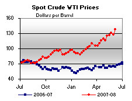 | 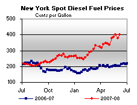 | ||||||||||||||||||||||||||||||||||||||
| 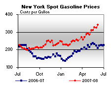 | 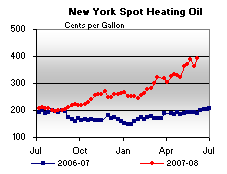 | ||||||||||||||||||||||||||||||||||||||
|
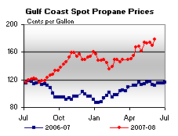 | ||||||||||||||||||||||||||||||||||||||
| Stocks (Million Barrels) | |||||||
| 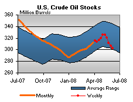 | 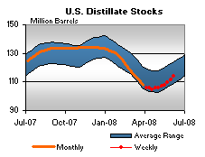 | ||||||
| 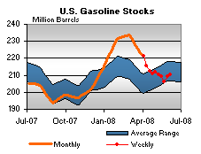 | 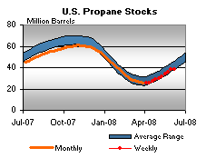 | ||||||
| Stocks Data | Changes From | Stocks Data | Changes From | ||||
| 06/06/08 | Week | Year | 06/06/08 | Week | Year | ||
| Crude Oil | 302.2 | Distillate | 114.0 | ||||
| Gasoline | 210.1 | Propane | 38.462 | ||||